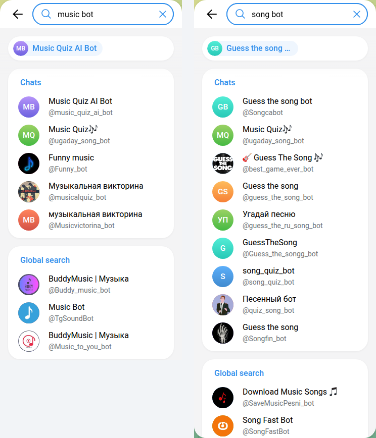
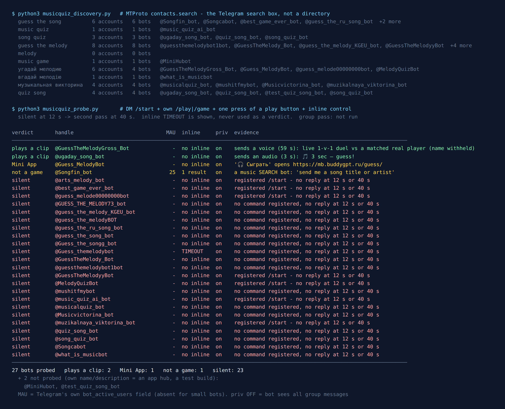

Telegram Music Bots: I Asked 110 for One Song, 43 Sent It
Search Telegram for “shazam” and you get six bots with Shazam in the name. Search “deezer bot” and you get nine. Not one of them has Telegram’s verified badge, and neither does anything else in this test. Search “song bot” and nine of the 17 results are, by their names, song quizzes or guess-the-song games.
So on 15 October 2026 I ran 12 Telegram searches for the things people want a music bot for: find a song, name a song, get lyrics, play music in a group, pull a track from Spotify or Deezer. Then I added the music bots that three recent web lists recommend and sent all 110 the same message: Queen Bohemian Rhapsody. 43 sent back an audio file. Not one of them sent a 30-second preview. 42 never answered, and 8 wanted me to join a channel before they’d give me anything.
The part I didn’t expect: those 43 bots sent only 13 different files. 23 of them, with names like Deezer, K-pop, Lyrics and Spotify, sent me a file of exactly 5,820,717 bytes.
If you want a music game for a group chat rather than a bot that sends songs, I tested those too, further down.

The results
| What came back | Bots | What that means |
|---|---|---|
| Sent the song as an audio file | 43 | Full length every time, 5:54 to 6:06. 40 from Telegram search, 3 from web lists |
| Silent | 42 | No reply to /start within 10 seconds. The biggest, @ugcmusicbot, shows 1,296,865 monthly users |
| Join a channel first | 8 | Asked me to subscribe to their channels or “sponsors” before sending, most of them after showing the results |
| Link only | 5 | Want a SoundCloud, Spotify or social media link, not a song name. That’s their stated job |
| Language picker I didn’t pass | 2 | Answered the song with the language menu again. I didn’t press a language, so these two are untested |
| Manybot mailing list | 2 | Typing anything subscribes you to someone’s broadcasts. /off pauses it |
| Other | 8 | One refused on copyright, one game, one video downloader called “Lyrics_Bot”, one Mini App, one lyrics-only bot, one classical-only bot, one in-bot player and one group voice-chat DJ |
Why so much noise? The search behind Telegram’s search box, contacts.search, “returns users found by username substring”. It matches names. A bot called Funny_bot came up for “music bot”, and it did send the song. Eight guess-the-song games came up for “song bot”, and seven of the eight never answered at all.
43 bots, 13 files
Once I sorted the 43 audio files by size, the bots fell into a handful of families. Inside a family, the bots don’t just behave alike. They send the same file, often with the same advert attached.
| Family | How you spot it | Bots that sent the file | Monthly users shown | File |
|---|---|---|---|---|
| Globe template | /start replies with six globe emoji and a language menu, Persian at the top | 24 of 25 | 2,368,814 | 5,820,717 bytes (VoiceShazamBot: 5,820,714) |
| The 14 MB file | “Pro mode is enabled for you. You have trial access…” (3 of the 4) | 4 | 2,274,029 | 14,190,293 bytes |
| @creatorMusicBot builds | “Type a song name, artist, or even lyrics”, ending in “Bot created with @creatorMusicBot” | 4 (LyBot refused) | 11,988 | 6,087,337 bytes |
| Two “Shazam” savers | @ShazamMusicX_bot and @Shazamusicsavebot | 2 | 120,128 | 8,542,667 bytes |
| One more pair | @music_tips_bot and @Deezermusicbotu_bot | 2 | — | 5,818,745 bytes |
| On their own | @deezermusicbot, @Music_to_you_bot, @JRmusic_bot, @findmusicpleasebot and three small ones | 7 | — | 7 different files |
The globe template: 25 names, one bot
25 of the 110 bots open with the same screen: six globe emoji and a language menu. Their names have nothing in common. @VoiceShazamBot, @KDMusic_Bot, @Deezerr_Music_bot, @Kpoploveandlovebot, @Lyrics23_bot, @MusikSpotify_bot, @larkplayer_bot. Together their profiles show 2,368,814 monthly users, and 1,882,369 of those belong to VoiceShazamBot.
Pick English and send a song, and 24 of them return the same list in the same order. It starts with “6:00 • Bohemian Rhapsody (Live At Wembley Stadium / Saturday 12th July 1986)”, not the studio version. I pressed that first result in each. 23 sent a file of exactly 5,820,717 bytes, and VoiceShazamBot sent one 3 bytes shorter with a different title tag. 23 also sent the same advert: “YouTube Music is now free in the Telegram bot! Listen and add songs to your profile!” VoiceShazamBot’s advert was a different one: “Want the same bot? Create your own — for free.”
The 25th, @Lyrics_Bot, has the same first screen. After “English” it turns out to be a TikTok and YouTube video downloader.
What this means for you: if the Deezer one doesn’t have your song, the Shazam one won’t either. Before you try a second bot, check that it isn’t the first one with a different name. Same first screen, same family.
The other families
The 14 MB family is almost as big in users. @Buddy_musicbot (887,477 monthly users), @Buddy_music_bot (238,098) and @tgmusicbot, which one of the web lists recommends, all start you on a “Pro mode” trial. @fmusbot (1,132,959) doesn’t mention Pro mode, but it sent the same 14,190,293-byte file as the three of them. Its advert, in Russian, was for JetTon: “JetTon will hand out $1,800,000 to all players”, credited to “everyone who has made at least one deposit”. That was the only advert in the test that mentioned deposits, and it came from the second-biggest bot that sent the song.
@creatorMusicBot names itself. Five bots open with the same welcome, which ends “🤖 Bot created with @creatorMusicBot”. Four of them sent the same 6,087,337-byte file. The fifth is the one that refused.
Full tracks, not previews
I picked Bohemian Rhapsody because it’s long. The studio version runs just under six minutes, so a 30-second clip would be obvious. The files came back at 354 to 366 seconds. 13 files carried no length in their metadata, so the player showed 0:00. Each of those was the same size, to within 3 bytes, as a file another bot sent with a full length on it. Telegram’s Bot API lets a bot send “audio files of up to 50 MB in size” as MP3 or M4A, so a whole song is nowhere near the limit.
Not every file was the recording I asked for. @findmusicpleasebot, a web-list pick, said “I’ve found song Queen - Bohemian Rhapsody - ReMastered (M. Bazoli Studio Works)” and sent a 6:06 file with no title or artist tag. @music_tips_bot sent three tracks: Bohemian Rhapsody, Don’t Stop Me Now and a parody called “Coronavirus Rhapsody”.
The one that said no
Only one bot refused. @LyBot, with 514,436 monthly users, listed the song, and when I pressed it, replied “🚫 Blocked by copyright holder”, then the song’s name and “Listen on other platforms”.
That reply is worth reading twice. It means a rights holder can get a track pulled from a bot, and has done it for this one. None of the replies I got from the 43 bots that sent the file claimed a licence for the recording. I’m not a lawyer and won’t tell you what’s allowed where you live. But a free bot handing out a full commercial recording isn’t the same thing as a streaming service that pays for it.
The globe template’s advert points at a real Telegram feature. Since the 31 August 2025 update, “Audio files from any of your chats can now be added to your profile with a single tap in the media player.” That works with any audio file in your chats, including your own.
Need something for the group chat besides music?
The free Party Game runs Truth or Dare, Never Have I Ever and Would You Rather as a Mini App inside Telegram. Nothing to add to the group, no channel to join, nothing to download.
Open the Party Game For guess-the-song games, see the music quiz bots I tested.What stands between you and the song
Channels. Eight bots wanted subscriptions before they would send anything, most of them after showing me the results. The two biggest were Uzbek, @kuynavobot (880,967 monthly users) and @SongFastBot (318,518). Both replied with “please subscribe to our channels below, then you can use the bot” and a Confirm button. @MusicsHuntersbot, which a web list recommends, asks before you search: “Please join our channel to use this bot.” One Russian bot offered the way out in the same message: subscribe to its partners’ channels or buy a premium subscription. I didn’t join any, so I can’t tell you whether the song comes after.
Counters. @JRmusic_bot sent the song with a progress bar: “1/10 — tracks left until Premium for a day: 9”. The Pro mode bots run on a trial. Neither asked for money on the first song.
Links. Three of the SoundCloud bots on the web lists work only from a link. @scload_bot answered my song name with “No valid links”. If you already have the SoundCloud URL, that’s fine. If you’re trying to find a song, you need a different bot.
Mailing lists. Two bots in the results were Manybot broadcast lists, one Italian and one Spanish. The first message you send subscribes you, and the bot tells you so: “Usa /off per mettere in pausa la tua iscrizione”. I sent /off to both.
What I didn’t test
- Recognition from sound. VoiceShazamBot, LyBot and others say they can name a song from a voice message. I only sent text.
- Groups and voice chats. I didn’t add any bot to a group. @vcmusiclubot is a group voice-chat DJ and didn’t answer in private, which is expected.
- Two language menus. @youtube_music_download_bot and @soundcloud_youtube_music_bot answered with their language menu and I didn’t press a language.
- The TgSound Mini App. @TgSoundBot (161,214 monthly users) answered with one button, “Open TgSound”. I didn’t open it.
One account, one evening, one song. A bot that was silent on 15 October may answer next week, and one that sent the file may get the same copyright notice LyBot got.
How to pick a music bot in two minutes
- Ignore the brand in the name. Six “Shazam” bots and nine “Deezer” bots came up, and none is verified. The name tells you what it wants to be found for, not who runs it.
- Test it with a long song you know. Look at the length on the file. If it says 0:00, play it and drag to the end.
- Look at the first screen before you switch bots. Six globe emoji, “Pro mode” or “@creatorMusicBot” means you’re in a family. Another bot from the same family will give you the same result.
- A channel request is the price, not a bug. 8 of 110 asked. If you don’t want the subscriptions, there are 43 that didn’t ask.
- Read what the first message signs you up for. Manybot lists subscribe you on your first message. Send
/off. - Look at the advert, not just the song. Most adverts were for other bots. One talked about deposits, on a bot with over a million monthly users.
Guess-the-song bots: 27 messaged, 2 played a clip
Half of what Telegram returns for “music bot” is a game, so I tested those separately, on 23 September 2026 with a re-check on 2 October. Ten queries (guess the song, music quiz, guess the melody, угадай мелодию, вгадай мелодію and five more) returned 29 bots. I messaged 27: /start, the bot’s own game command, one press of a play button. 23 never answered, on either night. That’s 85% silent, and it includes all eight bots with some spelling of “Guess the melody” in the name and @best_game_ever_bot, which promises “a 2 seconds sample of a song”.

@GuessTheMelodyGross_Botfound me a live opponent in under 20 seconds: a rated duel, a 59-second voice clip and seven answer buttons, first right answer wins. It sends clips as voice messages, which carry no title field, so nothing on screen gives the song away. Press Random song first if you don’t want a stranger.@ugaday_song_botlets you pick the clip length (1, 3, 6 or 12 seconds, “Shorter clip = more points!”). It plays alone, in a private chat. The catalogue is mostly Russian: the Foreign playlist held two songs when I opened it, and its Pop, Rock, 80s and 90s shelves said “No songs in this category yet”.@Guess_MelodyBotruns the game in a Mini App, ten tracks of ten seconds, and a friend gets the same ten for a duel. I didn’t play it through.@Songfin_bot, the top result for “guess the song” and named exactly that, is a music search bot. Nothing gets guessed.
For a group, none of them hosts a round in your chat. The no-bot version works fine: one person plays a few seconds from their phone in a voice chat, or sends a voice message recorded off the speaker (a forwarded music file shows the title), and the first correct reply takes the point.
This section replaced a separate guess-the-song census post on 22 October 2026.
Game night without another bot
The Telegram Party Pack is plain text you paste into the chat: 110 Truth or Dare, 45 Never Have I Ever, 30 Would You Rather, 30 Most Likely To, 25 Paranoia and 15 Story Chain prompts, with ready-made poll blocks and a host guide. Nothing to subscribe to, no channel to join.
Get the pack — $9.99Frequently asked questions
What is the best Telegram music bot?
Of the bots that sent the full song on 15 October 2026, the ones with the most monthly users were @VoiceShazamBot (1,882,369), @fmusbot (1,132,959), @Buddy_musicbot (887,477) and @deezermusicbot (445,183). VoiceShazamBot belongs to a family of 25 bots that share one backend, and fmusbot and Buddy_musicbot sent the same file, so trying more of them won’t widen your choice.
Do Telegram music bots send the full song or a preview?
In this test, the full song. All 43 bots that sent audio sent a full-length file of 5:54 to 6:06 for Bohemian Rhapsody. None sent a 30-second preview. One bot, @LyBot, refused with “Blocked by copyright holder”.
Is there an official Shazam, Spotify or Deezer bot on Telegram?
None of the 100 bots Telegram’s search returned has the verified badge, including all six results for “shazam” and all nine for “deezer bot”. A brand name in a bot’s title doesn’t mean that company runs it.
Why does a music bot ask me to join a channel?
The bot grows its channels, or its partners’ channels, with your subscription. 8 of 110 bots asked, usually after showing the search results. I didn’t join, so I can’t say whether they send the song after.